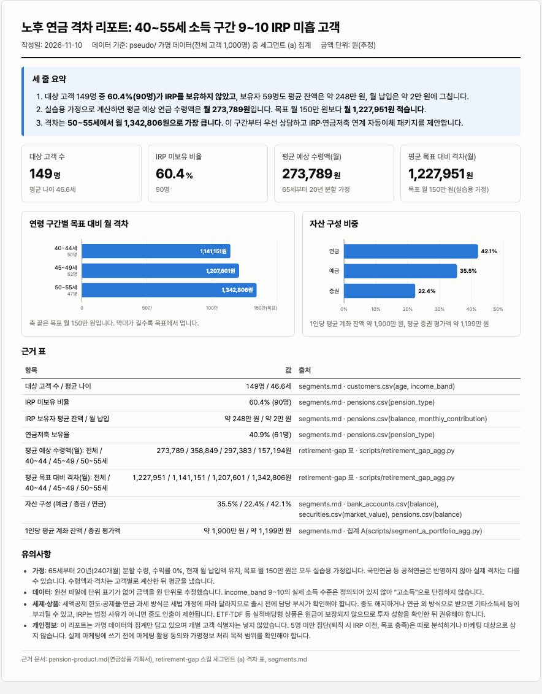

Ch4. Claude Code 확장하기
Hands-on Lab / Chapter 4
Claude Code Deep Dive Workshop, Chapter 4 - Claude Code 확장하기 (Plugins와 Mods) 실습
고객자산 분석 담당자가 Ch3에서 반복한 분석을 팀 자산으로 만듭니다. 노후 연금 격차 계산을 retirement-gap 스킬로 고정하고, Ch3의 세 에이전트와 Ch2 Lab 2의 DLP 훅과 함께 asset-team-kit 플러그인으로 묶어 로컬 마켓플레이스로 배포한 뒤, 이 킷으로 연금상품 기획서를 완성합니다. 후반에는 Claude Code 안에서 도는 코드인 mod를 직접 만들어 보고, IT보안·플랫폼 담당자 입장에서 조직이 mod와 사이드로드를 어떻게 통제하는지 확인합니다.
소요 시간 70분 내외 (슈퍼랩) + 선택 12분 · Task 준비 + 7개 + 선택 1개 · 기준 버전 Claude Code 2.1.287 이상 · Update 2026.11
슈퍼랩 규칙
파일을 손으로 짜지 말고 가능하면 Claude에게 시켜서 만듭니다. 아래 코드 블록은 막혔을 때 쓰는 정답지입니다.
TASK 00 · 사전 준비 확인 (3분)
이번 챕터의 재료는 Ch3의 세 에이전트(~/claude-lab/ch4/.claude/agents/)와 segments.md, Ch2 Lab 2의 DLP 스크립트(/opt/dlp/dlp-guard.sh)입니다. 내 것이 있으면 그대로 쓰고, 없는 것만 키트의 기준본으로 채웁니다. 키트를 이미 받았다면 내려받기 줄은 아무 일도 하지 않습니다.
그림은 Preflight에서 본 키트 내려받기 전체입니다. 아래 블록의 3-4번째 줄은 그중 복사와 풀기만 하고, 이미 받았다면 아무것도 하지 않습니다.
aws s3 cp --no-sign-request: 키트(zip)가 공개 S3 버킷에서 EC2의 /tmp로 복사됩니다. 자격 증명 없이 받습니다. 2) unzip: zip이 ~/claude-lab/mydata 안에서 raw/ · pseudo/ · checkpoints/ 세 폴더로 펼쳐집니다. 3) sha256sum -c: 파일마다 지문을 확인합니다. 하나라도 다르면 FAILED로 멈춥니다. 4) chmod -R a-w: raw/와 pseudo/를 읽기 전용으로 잠급니다. 5) raw/는 DLP 시연용 가짜 원본(주민번호 등), pseudo/는 분석용 가명처리 데이터입니다.Terminal, 전체 복사
use_bedrock_direct >/dev/null
claude --version
KIT=s3://ws-assets-prod-iad-r-iad-ed304a55c2ca1aee/5b8d0649-9ad2-43a8-8ff5-10ce7bb42e6f/mydata-kit.zip
[ -d ~/claude-lab/mydata/pseudo ] || (aws s3 cp --no-sign-request "$KIT" /tmp/mydata-kit.zip --only-show-errors && mkdir -p ~/claude-lab/mydata && unzip -qo /tmp/mydata-kit.zip -d ~/claude-lab/mydata)
mkdir -p ~/claude-lab/ch5 ~/claude-lab/ch4/.claude/agents
ln -sfn ~/claude-lab/mydata/pseudo ~/claude-lab/ch5/pseudo
for a in spending-analyst portfolio-analyst risk-reviewer; do
[ -f ~/claude-lab/ch4/.claude/agents/$a.md ] || cp ~/claude-lab/mydata/checkpoints/ch3/agents/$a.md ~/claude-lab/ch4/.claude/agents/
done
[ -f ~/claude-lab/ch4/segments.md ] || cp ~/claude-lab/mydata/checkpoints/ch3/segments.md ~/claude-lab/ch4/
CK=~/claude-lab/mydata/checkpoints/ch2/dlp-guard.sh
if [ ! -f /opt/dlp/dlp-guard.sh ] || ! cmp -s $CK /opt/dlp/dlp-guard.sh; then
sudo mkdir -p /opt/dlp && sudo install -m 755 $CK /opt/dlp/dlp-guard.sh && echo "DLP 훅: 기준본으로 설치했습니다"
else
echo "DLP 훅: 이미 기준본과 같습니다"
fi
ls ~/claude-lab/ch4/.claude/agents/ ~/claude-lab/ch4/segments.md /opt/dlp/dlp-guard.sh
sudo jq -e 'del(.forceLoginMethod, .forceLoginGatewayUrl) == {}' /etc/claude-code/managed-settings.json >/dev/null \
&& echo "정책 상태: 깨끗함" || echo "경고: 이전 챕터 정책이 남아 있습니다. 아래 '정책 초기화'를 먼저 실행하세요"
sudo cp /etc/claude-code/managed-settings.json ~/claude-lab/ch5/managed-settings.backup.json
sudo jq . /etc/claude-code/managed-settings.json이 블록이 하는 일 (붙여넣는 곳: 터미널)
- use_bedrock_direct는 실습 환경에 준비된 명령으로, Claude Code를 Bedrock 직접 호출 모드로 맞춥니다. >/dev/null은 화면 출력을 버린다는 뜻입니다.
- claude --version으로 버전을 봅니다. 2.1.287 이상이어야 이 챕터의 기능이 모두 있습니다.
- 키트의 S3 주소를 KIT 변수에 담고,
~/claude-lab/mydata/pseudo폴더가 없을 때만 내려받아 풉니다.[ -d … ] ||는 폴더가 있으면 뒤를 건너뛴다는 뜻이고,--no-sign-request는 로그인 없이 받는다는 뜻입니다. - ch5 폴더와 에이전트 폴더를 만들고(
mkdir -p는 이미 있어도 오류가 없습니다), ch5 안에pseudo바로가기(심볼릭 링크)를 걸어 TASK 01의 스킬이 데이터를 찾게 합니다. - 세 에이전트 이름을 하나씩 돌며, 내 에이전트 파일이 없을 때만 키트의 Ch3 기준본을 복사합니다. 내가 만든 파일이 있으면 덮어쓰지 않습니다.
segments.md도 같은 방식으로, 없을 때만 키트 기준본을 복사합니다.- 키트의 DLP 스크립트 경로를 CK에 담습니다. 설치된
/opt/dlp/dlp-guard.sh가 없거나cmp -s(조용히 두 파일을 비교)로 기준본과 다르면,sudo install -m 755가 기준본을 실행 권한 755로 설치합니다. 같으면 안내 문구만 출력하고 아무것도 바꾸지 않습니다. ls로 에이전트 세 개, segments.md, dlp-guard.sh가 모두 있는지 보여 줍니다. CHECKPOINT에서 이 출력을 봅니다.- managed-settings.json에서
forceLoginMethod,forceLoginGatewayUrl두 키를 뺀 나머지가 빈 객체({})인지jq -e로 확인합니다. 맞으면 "정책 상태: 깨끗함", 아니면 이전 챕터 정책이 남았다는 경고를 보여 줍니다. - 현재 정책 파일을 ch5의 백업 파일로 복사해 두고(TASK 07에서 원복에 씁니다), 내용을 보기 좋게 출력합니다.
"이전 챕터 정책이 남아 있습니다"가 나오면, 정책 초기화
이전 챕터의 원복을 건너뛰면 그 정책이 이번 챕터의 백업에 섞여 들어가고, 원복해도 계속 남습니다(예: Opus를 뺀 모델 목록). 백업 전에 아래로 초기화한 뒤 위 블록을 다시 실행하세요.
echo '{}' | sudo tee /etc/claude-code/managed-settings.json >/dev/null
sudo rm -f /etc/claude-code/managed-settings.d/*.json
use_bedrock_direct이 블록이 하는 일 (붙여넣는 곳: 터미널)
- 정책 파일을 빈 객체
{}로 덮어씁니다. 파일 쓰기에 관리자 권한이 필요해sudo tee를 쓰고,>/dev/null은 화면 출력을 버립니다. - 정책 조각 폴더
managed-settings.d안의 JSON 파일을 지웁니다.-f는 파일이 없어도 오류를 내지 않습니다. - 사용자 설정을 기본 모드로 되돌립니다. 이 뒤에 위의 큰 블록을 다시 실행하세요.
Ch2 Lab 2의 사이드로드 금지(disableSideloadFlags)가 남아 있으면 이 랩의 --plugin-dir가 막히므로, 특히 Lab 2의 원복을 건너뛰었다면 위 메시지를 꼭 확인하세요.
CHECKPOINT
TASK 01 · retirement-gap 스킬 만들기 (8분)
분석 담당자는 세그먼트마다 노후 연금 격차를 그때그때 다른 방식으로 계산해 왔습니다. 계산 절차를 스킬 하나로 고정하면 누가 언제 돌려도 같은 기준의 표가 나옵니다.
Step 1 · SKILL.md 작성
앞머리의 description은 Claude가 이 스킬을 언제 꺼낼지 판단하는 문장이고, 본문은 매번 같은 순서로 따를 절차입니다. 입력, 사용하는 열, 계산식, 출력 표 형식을 정해 두고, 마지막 금지 절로 개별 고객 식별자가 결과에 나오지 않게 합니다.
Terminal, 전체 복사
mkdir -p ~/claude-lab/ch5/.claude/skills/retirement-gap
cat > ~/claude-lab/ch5/.claude/skills/retirement-gap/SKILL.md << 'EOF'
---
name: retirement-gap
description: 고객 세그먼트 또는 고객 한 명의 노후 연금 격차를 정해진 절차로 계산한다. 예상 연금 수령액, 목표 대비 격차, IRP·연금저축 같은 보완 수단을 물으면 사용.
---
# 노후 연금 격차 분석
## 입력
- 세그먼트 기호 (a), (b), (c) 중 하나, 또는 고객 CI 토큰 1개(customers.csv의 rrn 열에 있는 CI_ 값)
- 세그먼트 정의(Ch3 segments.md와 같음)
- (a) 40~55세, income_band 9~10, IRP 없음 또는 IRP 잔액 500만 원 미만
- (b) 58~64세, 퇴직연금(DB·DC·IRP) 잔액 중 DB형 비중 80% 이상
- (c) 25~34세, 최근 3개월 카드 사용액 합계 500만 원 이상, 연금 없음
## 사용하는 열 (pseudo/ 가명 데이터만)
- pseudo/customers.csv: customer_id, age, income_band, rrn(CI 토큰으로 입력받았을 때만)
- pseudo/pensions.csv: customer_id, pension_type(DB, DC, IRP, 연금저축), balance, monthly_contribution
- (c)일 때만 pseudo/card_spend_monthly.csv: customer_id, amount
- raw/와 이름에 transactions가 들어간 파일은 읽지 않는다.
## 절차 (python3 csv 모듈로 고객마다 계산한 뒤 행별 평균)
1. 남은 기간 = max(65 - age, 0)년
2. 예상 적립금 = 연금 balance 합계 + monthly_contribution 합계 x 12 x 남은 기간 (수익률 0% 가정)
3. 예상 수령액(월) = 예상 적립금 / 240 (65세부터 20년 분할)
4. 목표 대비 격차(월) = max(1,500,000 - 예상 수령액, 0) (목표 월 150만 원은 실습용 가정)
5. 보완 수단은 격차가 0보다 큰 고객만 세고, 격차가 0이면 목표 충족으로 센다.
- IRP 잔액 500만 원 미만: IRP 추가 납입
- 연금저축 없음: 연금저축 신규
- 퇴직연금 중 DB형 비중 80% 이상: 퇴직 시 IRP 이전
6. 행 구분: (a) 40~44, 45~49, 50~55세 / (b) 58~60, 61~64세 / (c) 25~29, 30~34세, 마지막에 전체 행. CI 토큰 입력이면 "고객 1명" 한 행.
## 출력
| 구분 | 고객 수 | 예상 수령액(월) | 목표 대비 격차(월) | 보완 수단 |
- 금액은 원 단위 정수에 천 단위 쉼표를 쓴다.
- 보완 수단 칸은 "IRP 추가 납입 N명 · 연금저축 신규 N명 · 퇴직 시 IRP 이전 N명 · 목표 충족 N명" 형식이고, 0명인 항목은 뺀다.
- 표 아래에 가정(65세, 20년, 수익률 0%, 목표 월 150만 원)과 근거 파일·열 이름을 적는다.
## 금지
- customer_id, CI 토큰, 이름 같은 개별 고객 식별자는 표, 설명, 중간 출력 어디에도 쓰지 않는다. CI 토큰으로 입력받아도 결과에는 "고객 1명"으로만 쓴다.
EOF
head -4 ~/claude-lab/ch5/.claude/skills/retirement-gap/SKILL.md이 블록이 하는 일 (붙여넣는 곳: 터미널)
- 스킬 폴더를 만듭니다. 스킬은
.claude/skills/<이름>/SKILL.md위치에 있으면 Claude가 찾습니다. - heredoc은 여러 줄을 한 번에 파일로 쓰는 방법입니다. 2번 줄이 파일을 열고 41번 줄
EOF가 끝입니다. 따옴표 친'EOF'덕분에 안의 글자를 셸이 해석하지 않고 그대로 저장합니다. - 앞머리(frontmatter)입니다.
name은 스킬 이름이고/retirement-gap으로 부릅니다.description은 Claude가 이 스킬을 언제 꺼낼지 판단하는 문장이라, 연금 격차, 목표 대비 격차, IRP 같은 질문 단서를 넣었습니다. - 입력입니다. 세그먼트 기호(a)(b)(c) 또는 고객 CI 토큰 1개를 받고, 세 세그먼트의 정의를 Ch3 segments.md와 똑같이 적어 계산 대상이 달라지지 않게 합니다.
- 읽을 파일과 열을 못 박습니다. 가명 데이터
pseudo/만 읽고, 원본raw/와 거래 원장(transactions) 파일은 읽지 않는다고 적습니다. - 계산식입니다. 남은 기간(65세까지), 예상 적립금(잔액 합계 + 월 납입 x 12 x 남은 기간), 예상 수령액(적립금 / 240개월 = 20년 분할), 목표 월 150만 원 대비 격차를 순서대로 계산합니다. 누가 돌려도 같은 식이 됩니다.
- 보완 수단을 세는 규칙과 행 구분입니다. 격차가 있는 고객만 IRP 추가 납입, 연금저축 신규, 퇴직 시 IRP 이전으로 세고, 세그먼트별 나이 구간과 전체 행으로 표를 나눕니다.
- 출력 표의 열과 숫자 형식, 가정(65세, 20년, 수익률 0%, 목표 월 150만 원)과 근거 파일을 표 아래에 적게 합니다.
- 금지 절입니다. customer_id, CI 토큰 같은 개별 식별자는 표, 설명, 중간 출력 어디에도 쓰지 않게 하고, CI 토큰을 입력받아도 "고객 1명"으로만 씁니다.
head -4로 만든 파일의 앞 4줄(앞머리)만 출력해 파일이 제대로 써졌는지 확인합니다.
계산식의 65세, 20년 분할, 수익률 0%, 목표 월 150만 원은 실습용 가정입니다. 실제 업무라면 팀이 합의한 값으로 바꾸고 버전을 올립니다.
Step 2 · 세그먼트 (a)에 실행
cd ~/claude-lab/ch5 && claude이 블록이 하는 일 (붙여넣는 곳: 터미널)
- ch5 폴더로 이동한 뒤 Claude Code를 시작합니다. 이 폴더의
.claude/skills/에 있는 스킬이 세션에 불러와집니다.
/retirement-gap (a)이 입력이 하는 일 (붙여넣는 곳: Claude 입력창)
- 슬래시(/)로 시작하면 스킬을 이름으로 부르는 명령입니다.
(a)는 스킬에 넘기는 입력으로, 세그먼트 (a)를 계산하라는 뜻입니다. 스킬이 절차를 정하고, 읽고 계산하는 일은 모델이 합니다.
입력창에 /ret까지 치면 자동완성에 retirement-gap이 보입니다. Claude가 SKILL.md의 절차대로 pseudo/customers.csv와 pseudo/pensions.csv를 python3로 집계해 아래와 같은 표를 냅니다.
| 구분 | 고객 수 | 예상 수령액(월) | 목표 대비 격차(월) | 보완 수단 |
| --- | --- | --- | --- | --- |
| 40~44세 | 50명 | 358,849원 | 1,141,151원 | IRP 추가 납입 50명 · 연금저축 신규 30명 · 퇴직 시 IRP 이전 2명 |
| 45~49세 | 52명 | 297,383원 | 1,207,601원 | IRP 추가 납입 50명 · 연금저축 신규 29명 · 목표 충족 2명 |
| 50~55세 | 47명 | 157,194원 | 1,342,806원 | IRP 추가 납입 47명 · 연금저축 신규 28명 |
| 전체 | 149명 | 273,789원 | 1,227,951원 | IRP 추가 납입 147명 · 연금저축 신규 87명 · 퇴직 시 IRP 이전 2명 · 목표 충족 2명 |이 출력은 이렇게 읽습니다 (붙여넣지 않음, 참고용)
- 표의 머리글입니다. 구분, 고객 수, 예상 수령액(월), 목표 대비 격차(월), 보완 수단 열은 SKILL.md 출력 절이 정한 그대로입니다.
- (a) 세그먼트의 나이 구간 세 줄입니다. 구간마다 평균 예상 수령액과 격차, 보완 수단별 인원이 나옵니다. 개별 고객 ID는 없습니다.
- 전체 행입니다. 고객 수 149명이 Ch3 segments.md의 (a)와 같으면 절차대로 계산된 것입니다. 숫자는 반올림에 따라 조금 다를 수 있습니다.
전체 고객 수가 Ch3 segments.md의 (a)와 같은 149명이면 절차대로 계산된 것입니다. 표의 줄바꿈이나 반올림은 조금 다를 수 있습니다. 확인이 끝나면 /exit로 나옵니다.
CHECKPOINT
TASK 02 · asset-team-kit 플러그인 만들기 (12분)
스킬 파일 하나만 건네서는 동료가 같은 환경을 갖추기 어렵습니다. Ch3의 세 에이전트, 방금 만든 스킬, Ch2 Lab 2의 DLP 스크립트를 팀 킷 플러그인 하나로 묶습니다.
아래 그림은 이 TASK의 흐름입니다. 네 가지 재료가 하나의 폴더 asset-team-kit/에 모여 플러그인이 됩니다.
cp: Ch3의 에이전트 3개를 agents/로 복사합니다. 2) cp: retirement-gap의 SKILL.md를 skills/retirement-gap/로 복사합니다. 3) cp와 chmod 755: Ch2 Lab 2의 dlp-guard.sh를 scripts/로 복사하고 실행 권한을 줍니다. 4) 플러그인 폴더에서 Claude를 열어 .claude-plugin/plugin.json과 hooks/hooks.json을 만들게 합니다. 모델이 쓰므로 Amazon Bedrock이 켜집니다. 5) plugin.json은 이름, 버전, 설명을 담습니다. 6) hooks.json은 UserPromptSubmit과 PreToolUse에서 ${CLAUDE_PLUGIN_ROOT}/scripts/dlp-guard.sh를 실행하게 합니다. 7) claude plugin validate로 구조를 검사합니다. 경로는 모두 ~/claude-lab/ch5/marketplace/plugins/asset-team-kit 아래입니다.Step 1 · 플러그인 골격과 재료 모으기
Terminal, 전체 복사
K=~/claude-lab/ch5/marketplace/plugins/asset-team-kit
mkdir -p $K/.claude-plugin $K/agents $K/skills/retirement-gap $K/hooks $K/scripts
cp ~/claude-lab/ch4/.claude/agents/{spending-analyst,portfolio-analyst,risk-reviewer}.md $K/agents/
cp ~/claude-lab/ch5/.claude/skills/retirement-gap/SKILL.md $K/skills/retirement-gap/
cp /opt/dlp/dlp-guard.sh $K/scripts/
chmod 755 $K/scripts/dlp-guard.sh
ls -R $K이 블록이 하는 일 (붙여넣는 곳: 터미널)
- 플러그인 폴더 위치를 K 변수에 담습니다. 아래 줄들이 모두 이 K를 씁니다.
- 플러그인의 뼈대 폴더를 한 번에 만듭니다.
.claude-plugin은 설명 파일,agents,skills/retirement-gap,hooks,scripts는 재료가 들어갈 자리입니다. - Ch3의 에이전트 세 개를
agents/로 복사합니다.{a,b,c}는 셸이 세 파일 이름으로 펼쳐 주는 표기입니다. - TASK 01의 SKILL.md를 스킬 폴더로 복사합니다.
- Ch2 Lab 2의 DLP 스크립트를
scripts/로 복사하고chmod 755로 실행 권한을 줍니다. 훅이 이 파일을 실행하므로 실행 권한이 없으면 동작하지 않습니다. ls -R이 폴더를 하위까지 보여 줍니다. 재료가 제자리에 들어갔는지 눈으로 확인합니다.
세 재료는 TASK 00에서 없으면 키트 기준본으로 채웠으므로 그대로 복사됩니다.
Step 2 · Claude에게 나머지를 시키기
cd ~/claude-lab/ch5/marketplace/plugins/asset-team-kit && claude이 블록이 하는 일 (붙여넣는 곳: 터미널)
- 플러그인 폴더로 이동해 Claude Code를 엽니다. 이 폴더 안의 파일을 Claude가 고치게 하려는 것입니다.
이 디렉터리를 Claude Code 플러그인 asset-team-kit으로 완성해줘.
1) .claude-plugin/plugin.json: name asset-team-kit, version 0.1.0, 한국어 설명
2) hooks/hooks.json: UserPromptSubmit과 PreToolUse(matcher Bash|Write|Edit|WebFetch)에서 ${CLAUDE_PLUGIN_ROOT}/scripts/dlp-guard.sh를 실행
agents/, skills/, scripts/는 이미 채워져 있으니 고치지 마
끝나면 claude plugin validate . 를 실행해서 통과시켜줘이 입력이 하는 일 (붙여넣는 곳: Claude 입력창)
- 요청의 주제입니다. 이 폴더를 asset-team-kit 플러그인으로 완성하라는 뜻입니다.
plugin.json에 들어갈 값(이름, 버전, 한국어 설명)을 직접 정해 줍니다.hooks.json에서 어느 이벤트에, 어느 스크립트를 실행할지 정해 줍니다.${CLAUDE_PLUGIN_ROOT}는 플러그인이 설치된 폴더로 바뀌는 변수입니다.- 이미 복사해 둔 agents/, skills/, scripts/는 건드리지 못하게 막습니다.
- 마지막에
claude plugin validate를 실행해 통과시키게 합니다. 파일을 쓰고 고치는 일은 Claude가 모델로 합니다.
Claude가 만든 두 파일을 아래 정답지와 비교해 본 뒤, /exit로 나와 정답지 블록을 실행해 내용을 맞춥니다. 다음 챕터는 이 정답지와 같은 킷을 기준으로 이어집니다.
정답지 (비교한 뒤 실행)
K=~/claude-lab/ch5/marketplace/plugins/asset-team-kit
cat > $K/.claude-plugin/plugin.json << 'EOF'
{ "name": "asset-team-kit", "version": "0.1.0", "description": "고객자산 분석팀 킷: 분석 에이전트 3종, retirement-gap 스킬, DLP 훅" }
EOF
cat > $K/hooks/hooks.json << 'EOF'
{
"hooks": {
"UserPromptSubmit": [
{ "hooks": [{ "type": "command", "command": "\"${CLAUDE_PLUGIN_ROOT}/scripts/dlp-guard.sh\"" }] }
],
"PreToolUse": [
{ "matcher": "Bash|Write|Edit|WebFetch",
"hooks": [{ "type": "command", "command": "\"${CLAUDE_PLUGIN_ROOT}/scripts/dlp-guard.sh\"" }] }
]
}
}
EOF
claude plugin validate $K이 블록이 하는 일 (붙여넣는 곳: 터미널)
- 플러그인 폴더 위치를 K 변수에 담습니다. 이 블록만 따로 실행해도 되도록 다시 정합니다.
plugin.json을 씁니다.name은 플러그인 이름으로, 스킬은/asset-team-kit:retirement-gap처럼 이 이름이 앞에 붙습니다.version은 변경 이력의 기준이고,description은 목록에 보이는 설명입니다.hooks.json을 heredoc으로 씁니다. 5번 줄이 파일을 열고 17번 줄EOF가 끝입니다.- 최상위
hooks키 아래에 이벤트 이름별로 훅을 적습니다. UserPromptSubmit은 프롬프트를 보낼 때(모델에 가기 전) 실행됩니다. matcher가 없어서 모든 프롬프트가 대상입니다.PreToolUse는 도구를 쓰기 전에 실행됩니다.matcher의Bash|Write|Edit|WebFetch는 이 네 도구를 쓸 때만 실행한다는 조건입니다(|는 "또는").- 실제 실행할 명령입니다.
type이command이면 셸 명령을 실행하고,${CLAUDE_PLUGIN_ROOT}/scripts/dlp-guard.sh는 설치된 플러그인 폴더 안의 스크립트를 가리킵니다. 경로를\"로 감싸 공백이 있는 경로에서도 깨지지 않게 합니다. claude plugin validate가 폴더 구조와 JSON 파일을 검사합니다. 경고가 남아도 마지막 줄이Validation passed with warnings면 통과입니다.
UserPromptSubmit은 프롬프트를, PreToolUse는 도구 입력을 검사합니다. Ch2 Lab 2의 managed 정책과 같은 구성을 플러그인 훅으로 옮긴 것입니다. 경로를 큰따옴표로 감싸지 않으면 validate가 "경로에 공백이 있으면 깨진다"는 경고를 냅니다. author·license·README가 없다는 경고는 남아도 되고, 마지막 줄이 Validation passed with warnings면 통과입니다.
CHECKPOINT
TASK 03 · 로컬 마켓플레이스로 배포 (8분)
아래 그림은 TASK 03의 등록과 설치부터 TASK 04의 기획서와 훅 차단까지 이어지는 전체 흐름입니다.
/plugin marketplace add로 카탈로그를 등록합니다. 3) /plugin install asset-team-kit@fsi-local로 플러그인을 user 범위에 설치합니다. 4) @asset으로 에이전트 세 개가, /retire로 /asset-team-kit:retirement-gap 스킬이 보입니다. 5) 스킬과 에이전트를 써서 pension-product.md를 만듭니다. 메인과 서브에이전트가 Bedrock 모델을 부르고, 파일은 메인이 씁니다. 6) 주민번호 형식 프롬프트는 플러그인 훅(asset-team-kit@fsi-local)이 모델에 가기 전에 차단합니다. 7) 사용자가 /plugin에서 플러그인을 끄면 이 훅도 사라지므로, 꼭 지켜야 하는 DLP는 Ch2 Lab 2처럼 managed 훅으로 강제합니다.Step 1 · 마켓플레이스 카탈로그
Terminal, 전체 복사
mkdir -p ~/claude-lab/ch5/marketplace/.claude-plugin
cat > ~/claude-lab/ch5/marketplace/.claude-plugin/marketplace.json << 'EOF'
{
"name": "fsi-local",
"owner": { "name": "Platform Team" },
"plugins": [
{ "name": "asset-team-kit", "source": "./plugins/asset-team-kit", "description": "고객자산 분석팀 킷" }
]
}
EOF
claude plugin validate ~/claude-lab/ch5/marketplace이 블록이 하는 일 (붙여넣는 곳: 터미널)
- 마켓플레이스 폴더 안에
.claude-plugin폴더를 만듭니다. 카탈로그 파일은 이 이름의 폴더에 있어야 합니다. - 카탈로그
marketplace.json을 heredoc으로 씁니다. 2번 줄이 열고 10번 줄EOF가 닫습니다. name은 마켓플레이스 이름입니다. 설치 명령의asset-team-kit@fsi-local에서@뒤가 이 이름입니다.owner는 이 카탈로그를 관리하는 주체입니다. 플랫폼 팀으로 적었습니다.plugins목록입니다. 각 항목의name은 플러그인 이름,source는 이 카탈로그 기준 플러그인 폴더의 상대 경로(./plugins/asset-team-kit),description은 목록에 보이는 설명입니다.claude plugin validate로 카탈로그 형식이 맞는지 확인합니다.
Step 2 · 설치하고 확인
새 프로젝트 폴더에서 동료가 설치하는 상황을 흉내 냅니다. 동료 폴더에는 데이터 링크와 segments.md만 있고, 에이전트와 스킬은 없습니다.
mkdir -p ~/claude-lab/ch5/colleague && cd ~/claude-lab/ch5/colleague && git init -q
ln -sfn ~/claude-lab/mydata/pseudo pseudo && cp ~/claude-lab/ch4/segments.md .
claude이 블록이 하는 일 (붙여넣는 곳: 터미널)
- 동료 폴더를 만들고 들어가서
git init -q로 빈 git 저장소를 만듭니다(-q는 안내 문구를 줄입니다). - 가명 데이터 폴더의 바로가기와 segments.md만 가져옵니다. 에이전트와 스킬은 일부러 가져오지 않았습니다. 설치로 따라오는지 보기 위해서입니다.
- 이 폴더에서 Claude Code를 시작합니다. 아직 마켓플레이스도 플러그인도 없는 상태입니다.
/plugin marketplace add ~/claude-lab/ch5/marketplace이 입력이 하는 일 (붙여넣는 곳: Claude 입력창)
- 카탈로그가 있는 폴더를 마켓플레이스로 등록합니다. 아직 플러그인이 설치되는 것은 아니고, "이런 플러그인이 있다"는 목록만 Claude에 알려 줍니다.
/plugin install asset-team-kit@fsi-local이 입력이 하는 일 (붙여넣는 곳: Claude 입력창)
플러그인@마켓플레이스형식으로 설치합니다. 범위 질문에는 기본값 user 범위로 Enter를 누릅니다. 설치되면 플러그인의 에이전트, 스킬, 훅이 이 세션에서 바로 켜집니다.
Successfully added marketplace: fsi-local이 나온 뒤 설치 명령을 보내면 설치 범위를 묻습니다. 기본값 Install for you (user scope)로 Enter를 누르면 ✓ Installed asset-team-kit. Plugin is now active.가 나오고, 재시작 없이 바로 확인할 수 있습니다.
| 범위 | 저장 위치 | 쓰임 |
|---|---|---|
| user | ~/.claude/settings.json |
나만, 모든 프로젝트 |
| project | 저장소의 .claude/settings.json |
저장소를 받는 동료 전체 |
| local | 저장소의 .claude/settings.local.json |
나만, 이 저장소에서만 |
확인할 두 가지(DLP 훅은 TASK 04에서 확인합니다):
- 입력창에
@asset을 치면asset-team-kit:portfolio-analyst (agent)등 플러그인 이름이 붙은 에이전트 세 개가 보인다 /retire를 치면/asset-team-kit:retirement-gap스킬이 보인다
슬래시 명령은 붙여 넣으세요
/plugin marketplace add …를 빠르게 타이핑하면 자동완성이 앞 글자로 다른 명령(/add-dir 등)을 골라 실행하기도 합니다. 복사 버튼으로 복사해 붙여 넣고 Enter를 누르세요. 엉뚱한 창이 뜨면 Esc로 닫습니다.
조직 전체 배포라면
회사에서는 같은 마켓플레이스를 사내 git 저장소에 두고, managed settings의 extraKnownMarketplaces(등록) + enabledPlugins(강제 설치) + strictKnownMarketplaces(허용 목록)로 내려보냅니다. git에 닿지 않는 망에서는 CLAUDE_CODE_PLUGIN_SEED_DIR로 빌드 시점에 심어 둔 플러그인을 읽기 전용으로 씁니다.
CHECKPOINT
TASK 04 · 연금상품 기획서와 웹 리포트 (15분)
이제 동료 폴더에서 킷만으로 연금상품 기획서를 씁니다. 세그먼트 (a)는 세액공제 여력이 크고 IRP 잔액이 적어, IRP와 연금저축을 묶은 상품의 첫 대상입니다.
Step 1 · 킷으로 기획서 쓰기
TASK 03의 동료 세션에서 이어서 보냅니다.
asset-team-kit으로 연금상품 기획서를 pension-product.md로 써줘.
1) retirement-gap 스킬로 segments.md의 세그먼트 (a) 격차 표를 만든다
2) portfolio-analyst에게 (a)의 자산 구성과 연금 보유 현황 분석을 맡긴다
3) 목차: 대상 세그먼트, 상품 구조(IRP + 연금저축 연계), 고객 혜택, 근거 지표(segments.md와 retirement-gap 표의 수치), 리스크와 유의사항
4) 저장하기 전에 risk-reviewer에게 근거와 개인정보 노출 점검을 맡긴다
개별 고객 ID와 토큰 값은 쓰지 말고 집계만 써줘이 입력이 하는 일 (붙여넣는 곳: Claude 입력창)
- 요청 전체의 목적입니다. 플러그인 이름을 앞에 적어 이 킷의 도구를 쓰게 합니다.
- 첫 번째 일은 retirement-gap 스킬로 격차 표를 만드는 것입니다.
- 두 번째는 portfolio-analyst 에이전트에게 자산 구성과 연금 보유 현황 분석을 맡기는 것입니다. 이 에이전트는 별도 컨텍스트에서 일하고 요약만 돌려줍니다.
- 기획서의 목차를 정해 줍니다. 근거 지표는 segments.md와 격차 표의 숫자를 쓰게 합니다.
- 저장하기 전에 risk-reviewer에게 근거와 개인정보 노출 점검을 맡깁니다.
- 개별 고객 ID와 토큰 값은 쓰지 않고 집계만 쓰라는 규칙입니다.
메인이 asset-team-kit:retirement-gap 스킬로 격차 표를 만들고, 플러그인 에이전트에게 분석과 점검을 나눠 맡긴 뒤 pension-product.md를 씁니다. 근거 지표의 고객 수(149명), 평균 IRP 잔액, 목표 대비 격차는 segments.md와 TASK 01 표의 값과 같아야 합니다. 저장이 끝나면 식별자가 섞이지 않았는지 확인합니다.
!grep -nE 'C[0-9]{4}|고객[0-9]{4}|CI_' pension-product.md || echo "식별자 없음"이 입력이 하는 일 (붙여넣는 곳: Claude 입력창)
!로 시작하면 Claude가 아니라 셸에서 바로 실행하는 명령입니다.grep -nE가 pension-product.md에서C와 숫자 4자리,고객과 숫자 4자리,CI_중 하나라도 있는 줄을 줄 번호와 함께 찾습니다. 하나도 없어 grep이 실패하면||뒤의 echo가 "식별자 없음"을 출력합니다.
Step 2 · 플러그인 훅이 막는 것 확인
같은 세션에서 주민등록번호 형식(가짜 값)이 든 프롬프트를 보냅니다.
고객 900101-1234567 조회해줘이 입력이 하는 일 (붙여넣는 곳: Claude 입력창)
- 주민등록번호 형식의 가짜 값이 든 프롬프트입니다. 플러그인의 UserPromptSubmit 훅이 모델에 보내기 전에 검사해서 차단해야 합니다. 이 프롬프트는 확인용이라 모델이 답하지 않습니다.
프롬프트가 모델로 가기 전에 DLP 메시지와 함께 차단되고, This hook comes from the asset-team-kit@fsi-local plugin.이 표시됩니다. 확인이 끝나면 /exit로 나옵니다.
플러그인 훅은 팀의 안전망이지 강제 장치가 아닙니다
사용자는 /plugin에서 플러그인을 끄거나 지울 수 있고, 그러면 이 훅도 함께 사라집니다. 조직이 반드시 지켜야 하는 DLP는 Ch2 Lab 2 TASK 01처럼 managed 정책의 훅으로 강제합니다.
Step 3 · 한 장짜리 웹 리포트로 만들기
기획서는 개발자가 아닌 사람에게 보여 줄 때가 많습니다. 같은 숫자로 임원 보고서 모양의 웹 페이지를 만듭니다. 차트까지 들어간 HTML 파일 하나라서 메일에 붙이거나 PDF로 저장해 나눠 줄 수 있습니다. Step 2에서 나왔으므로 동료 폴더에서 세션을 다시 엽니다.
Terminal
cd ~/claude-lab/ch5/colleague && claude이 블록이 하는 일 (붙여넣는 곳: 터미널)
- TASK 03에서 만든 동료 폴더로 들어가 Claude Code를 엽니다.
pension-product.md와 asset-team-kit 플러그인이 있는 곳입니다.
pension-product.md와 retirement-gap 스킬의 세그먼트 (a) 격차 표를 바탕으로, 비개발자 임원이 보는 한 장짜리 웹 리포트 pension-report.html을 만들어줘.
- 외부 라이브러리나 CDN 없이 HTML 파일 하나로 만들고, 차트는 인라인 SVG로 그려줘.
- 구성: 제목과 작성일·데이터 기준, 세 줄 요약 박스, KPI 카드 4개(대상 고객 수, IRP 미보유 비율, 평균 예상 수령액(월), 평균 목표 대비 격차(월)), 연령 구간별 월 격차 막대 차트, 자산 구성 막대 차트, 근거 표(항목, 값, 출처), 유의사항.
- 숫자는 pension-product.md와 retirement-gap 표에 있는 값만 쓰고, 개별 고객 ID와 토큰 값은 쓰지 마.
- 인쇄하거나 PDF로 저장해도 한 장에 깔끔하게 나오게 해줘.
끝나면 risk-reviewer 에이전트에게 근거와 개인정보 노출 점검을 맡겨줘.이 입력이 하는 일 (붙여넣는 곳: Claude 입력창)
- 무엇을 만들지와 누가 볼지를 정합니다. 근거는 Step 1의 기획서와 TASK 01의 격차 표입니다.
- 파일 하나로 끝나게 합니다. 외부 주소에서 라이브러리를 받지 않으므로 사내망이나 메일 첨부에서도 그대로 열립니다.
- 보고서의 순서를 정해 줍니다. 요약과 KPI 카드를 먼저 두고, 차트와 근거 표, 유의사항을 뒤에 둡니다.
- 숫자의 출처를 두 문서로 묶고, 개별 고객 식별자를 쓰지 않게 합니다.
- 인쇄용 스타일까지 넣게 합니다. 브라우저의 인쇄나 PDF 저장으로 나눠 줄 수 있습니다.
- 저장 뒤 risk-reviewer에게 근거와 개인정보 노출을 점검받습니다.
2~4분 뒤 pension-report.html이 생깁니다. risk-reviewer가 인원 수끼리 빼서 5명 미만 집단이 드러나는 조합을 찾으면 Claude가 그 숫자를 빼고 다시 저장하기도 합니다. 저장이 끝나면 외부 주소와 식별자가 없는지 확인합니다.
!grep -cE 'src="https?://|href="https?://' pension-report.html; grep -nE '(^|[^0-9A-Fa-f#])C[0-9]{4}([^0-9A-Fa-f]|$)|고객[0-9]{4}|CI_' pension-report.html || echo "식별자 없음"이 입력이 하는 일 (붙여넣는 곳: Claude 입력창)
- 앞의
grep -cE는 외부 주소를 불러오는src,href의 개수를 셉니다.0이면 파일 하나로 완결된 것입니다. 뒤의 grep은 Step 1과 같은 식별자 검사입니다. HTML에는#C0392B같은 색상값이 있어서,C와 숫자 4자리 앞에#이나 16진수 글자가 오거나 뒤에 16진수 글자가 이어지면 고객 ID로 보지 않습니다.C0001님처럼 한글이 바로 붙은 ID는 그대로 잡습니다.
Step 4 · 브라우저로 열어 보기
code-server의 편집기는 HTML을 그림으로 보여 주지 않습니다. 대신 이 폴더를 작은 웹 서버로 띄우면 code-server가 그 포트를 브라우저 탭으로 열어 줍니다. 별도의 확장 프로그램은 필요 없습니다.
Terminal 2 (터미널 패널의 +로 새 터미널을 엽니다)
cd ~/claude-lab/ch5/colleague && python3 -m http.server 8000이 블록이 하는 일 (붙여넣는 곳: 터미널)
- 동료 폴더를 8000번 포트의 웹 서버로 엽니다.
Serving HTTP on 0.0.0.0 port 8000이 나오면 켜진 것이고, 이 터미널은 서버가 쓰고 있으니 그대로 둡니다.
오른쪽 아래에 Your application running on port 8000 is available. 알림이 뜨면 Open in Browser를 누릅니다. 새 탭에 파일 목록이 열리면 pension-report.html을 누릅니다. 알림을 놓쳤다면 지금 IDE 주소의 도메인 뒤에 /proxy/8000/pension-report.html을 붙여 엽니다(예: https://…cloudfront.net/proxy/8000/pension-report.html).

모양과 문구는 실행마다 조금씩 다르지만 구성은 위 그림과 같아야 합니다. KPI 카드의 149명, 월 273,789원, 월 1,227,951원은 TASK 01 표의 전체 행과, 60.4%(90명)는 pension-product.md의 연금 보유 현황과 같아야 합니다. 브라우저에서 ⌘ P(Windows는 Ctrl P)로 인쇄 미리보기를 열어 한 장에 들어가는지 봅니다. 다 봤으면 Terminal 2에서 Ctrl C로 서버를 끕니다.
CHECKPOINT
TASK 05 · 첫 mod 만들기 (12분)
mod는 플러그인의 한 종류로, hooks/hooks.json의 modules 키가 가리키는 JavaScript 파일이 Claude Code 프로세스 안에서 이벤트 핸들러로 돕니다. 공식 튜토리얼의 first-mod를 그대로 만듭니다.
Step 1 · 세 파일 작성
Terminal, 전체 복사
M=~/claude-lab/ch5/first-mod
mkdir -p $M/.claude-plugin $M/hooks
cat > $M/.claude-plugin/plugin.json << 'EOF'
{
"name": "first-mod",
"version": "0.1.0",
"description": "Counts Claude's tool calls, shows the count beside the spinner, and adds a /tally command",
"author": { "name": "Workshop" }
}
EOF
cat > $M/hooks/hooks.json << 'EOF'
{
"description": "The first-mod hooks module",
"modules": ["./register.js"]
}
EOF
cat > $M/hooks/register.js << 'EOF'
let calls = 0
export function register(on) {
on('session.start', async ($, e, next) => {
await $.command.register({ name: 'tally', description: 'Show how many tool calls Claude has made' })
return next(e)
})
on('tool.call', async ($, e, next) => {
calls += 1
$.ui.invalidate('ui.render')
return next(e)
})
on('command.run', { command: 'tally' }, async () => {
return { text: 'Claude has made ' + calls + ' tool calls since this mod loaded' }
})
on('ui.render', { component: 'Spinner' }, async ($, e, next) => {
return next({ ...e, props: { ...e.props, suffix: ' · tool calls: ' + calls + '…' } })
})
}
EOF
claude plugin validate $M이 블록이 하는 일 (붙여넣는 곳: 터미널)
- mod 폴더 위치를 M 변수에 담고, 설명 파일 폴더와 hooks 폴더를 만듭니다.
plugin.json입니다. mod도 플러그인의 한 종류라서 name, version, description, author가 같은 방식으로 들어갑니다.hooks.json입니다. 훅 명령 대신modules키로 JavaScript 파일(./register.js)을 가리킵니다. 이 파일이 Claude Code 프로세스 안에서 이벤트 핸들러로 돕니다.register.js를 heredoc으로 씁니다. 17번 줄이 열고 40번 줄EOF가 닫습니다.calls는 도구 호출 횟수를 세는 모듈 변수입니다. hot reload로 다시 로드되면 0으로 초기화됩니다.register(on)이 mod의 진입점입니다.session.start이벤트에서/tally명령을 등록하고,next(e)로 이벤트를 다음 처리기에 넘깁니다.tool.call(Claude가 도구를 부를 때)마다 카운트를 1 올리고,ui.invalidate로 화면을 다시 그리게 합니다./tally명령이 실행되면 지금까지의 호출 횟수를 문장으로 돌려줍니다.ui.render로 스피너(작업 중 표시) 그리기에 끼어들어 옆에· tool calls: N…을 붙입니다.claude plugin validate가 mod를 검사하고 hooks, calls 요약 줄을 보여 줍니다.
출력에서 mod 요약 네 줄을 읽습니다.
❯ ./register.js hooks: session.start, tool.call, command.run{command=tally}, ui.render{component=Spinner}
❯ ./register.js answers its own command: command.run{command=tally}
❯ ./register.js gating hook without .catch: tool.call
❯ ./register.js calls: $.command.register, $.ui.invalidate이 출력은 이렇게 읽습니다 (붙여넣지 않음, 참고용)
- mod가 끼어드는 이벤트 목록입니다. 이 mod가 어디에 손대는지 한눈에 보입니다.
- 자기가 등록한
tally명령에 스스로 답한다는 뜻으로, 정상입니다. tool.call은 동작을 통과시키거나 막는 훅인데.catch가 없다는 경고입니다. mod에서 예외가 나면 도구 호출 자체가 실패할 수 있어, 운영 mod는.catch를 답니다.- mod가 바깥에 하는 일입니다. 보안 리뷰는 이 줄부터 봅니다.
| 줄 | 의미 |
|---|---|
hooks: |
이 mod가 끼어드는 이벤트 |
answers its own command: |
자기가 등록한 명령에 스스로 답함(정상) |
gating hook without .catch: |
tool.call처럼 동작을 통과시키거나 막는 훅에서 예외가 나면 도구 호출 자체가 실패할 수 있다는 경고. 운영 mod는 .catch로 실패해도 통과시키게 만듭니다(선택 TASK 06 참고) |
calls: |
이 mod가 바깥에 하는 일. 보안 리뷰는 이 줄부터 봅니다 |
그 아래 README·LICENSE·icon이 없다는 "Plugin directory checks"는 공개 디렉터리 등록용 검사라 결과에 영향이 없습니다. 마지막 줄이 ✔ Validation passed면 됩니다.
Step 2 · 실행과 hot reload
cd ~/claude-lab/ch5/colleague && claude --plugin-dir ~/claude-lab/ch5/first-mod이 블록이 하는 일 (붙여넣는 곳: 터미널)
- 동료 폴더에서 Claude Code를 열면서
--plugin-dir로 first-mod 폴더를 이번 세션에만 불러옵니다. 마켓플레이스 설치와 달리 사이드로드(직접 로드)라서 TASK 07에서 정책으로 막을 수 있습니다.
이 폴더의 파일 목록을 보고 .git/config를 읽어줘이 입력이 하는 일 (붙여넣는 곳: Claude 입력창)
- 파일 목록과
.git/config읽기를 시켜 도구 호출을 몇 번 일으킵니다. mod가 호출 횟수를 세므로 스피너 옆 숫자가 늘어납니다.
스피너 옆에 · tool calls: N…이 붙는 것을 보고, 끝나면 /tally를 입력합니다(first-mod: Claude has made N tool calls since this mod loaded).
이어서 hot reload를 봅니다. 세션을 연 채로 입력창에 아래를 붙여 넣으면(!로 시작하면 셸 명령) 파일이 바뀌고 first-mod: reloaded (4 hooks: …)가 표시됩니다.
!sed -i "s/' · tool calls: '/' · 도구 호출: '/" ~/claude-lab/ch5/first-mod/hooks/register.js이 입력이 하는 일 (붙여넣는 곳: Claude 입력창)
!로 시작하니 Claude가 아니라 셸이 실행합니다.sed -i가 register.js 안의' · tool calls: '글자를' · 도구 호출: '로 제자리에서 바꿉니다. 파일이 바뀌면 mod가 hot reload로 다시 로드됩니다.
다음 질문부터 스피너가 · 도구 호출: 0…으로 바뀝니다. 카운트가 0으로 돌아간 것도 보세요. 다시 로드되면 모듈의 변수(let calls)가 새로 초기화됩니다.
Step 3 · Claude에게 mod 고치게 하기
같은 세션에서 요청합니다.
이 mod에 /tally-reset 커맨드를 추가해서 카운트를 0으로 되돌리게 해줘. 끝나면 claude plugin validate로 확인해줘이 입력이 하는 일 (붙여넣는 곳: Claude 입력창)
- Claude에게 mod 수정을 시킵니다. 새 명령
/tally-reset은session.start에서 등록되므로 hot reload만으로는 안 보이고, 세션을 다시 열어야 보입니다. 파일을 고치는 것은 Claude의 모델입니다.
Claude가 먼저 plugin-authoring 스킬을 불러온 뒤 고칩니다. 새 명령은 session.start에서 등록되므로, hot reload만으로는 /tally-reset이 목록에 나타나지 않습니다. /exit 후 같은 명령으로 다시 열면 보입니다.
mod에는 샌드박스가 없습니다
mod는 사용자 권한으로 파일, 프로세스, 네트워크, 비밀값에 닿을 수 있습니다. 남이 만든 mod는 calls: 줄에 $.process.run이나 $.http.fetch가 있는지부터 확인하세요.
CHECKPOINT
선택 TASK 06 · Bedrock용 idle compaction mod 만들기 (12분)
Ch5에서 보듯 Claude Code 내장 idle compaction은 1시간 캐시와 Anthropic feature flag가 필요해 Bedrock에서는 동작하지 않는다는 보고가 있습니다. Bedrock 메인 대화의 기본 캐시 수명은 5분이라, 자리를 비운 뒤 돌아오면 큰 대화 전체를 비캐시 입력으로 다시 읽습니다. 같은 아이디어를 5분 캐시에 맞춰 mod로 직접 만들어 봅니다.
공식 기능이 아닌 커스텀 예제입니다
이 mod는 공식 mods API($.clock, $.session.usage, $.session.compact, turn.complete)로 만든 워크숍 예제입니다. 공식 기능처럼 조직 표준으로 바로 배포하지 말고, OTel로 효과를 측정한 뒤 판단하세요.
왜 settings hooks가 아니라 mod인가
| 필요한 것 | settings hooks | mods |
|---|---|---|
| idle 타이머 | 없음 (이벤트가 올 때만 실행되고 끝남) | $.clock.after(ms, fn) |
| 세션 안에서 압축 시작 | 없음 (PreCompact는 압축에 반응하거나 막을 뿐) |
$.session.compact() |
| 현재 컨텍스트 크기 | transcript 파일을 직접 세야 함 | $.session.usage().context.tokens |
hooks만으로는 Notification hook으로 "곧 캐시가 식습니다, 자리를 비우면 /compact 하세요" 알림을 띄우는 데까지만 할 수 있습니다.
동작 설계
- 메인 대화의 턴이 끝나면(
turn.complete) 컨텍스트가minContextTokens이상인지 봅니다. - 그렇다면
cacheTtlSeconds − marginSeconds(기본 300 − 45 = 255초) 뒤로 압축을 예약합니다. 캐시가 식기 전에 압축해야 접두부를 캐시에서 싸게 읽습니다. - 그 전에 사용자가 입력하면(
prompt.submit) 예약을 취소합니다. 서브에이전트 턴은 무시하고, 한 번 쉬는 동안에는 한 번만 압축합니다.
Step 1 · 파일 세 개 만들기
Terminal, 전체 복사
B=~/claude-lab/ch5/bedrock-idle-compact
mkdir -p $B/.claude-plugin $B/hooks
cat > $B/.claude-plugin/plugin.json << 'EOF'
{
"name": "bedrock-idle-compact",
"version": "0.1.0",
"description": "Compacts a large idle conversation shortly before the Bedrock prompt cache (default 5 min) expires",
"author": { "name": "Workshop" }
}
EOF
echo '{ "description": "bedrock-idle-compact hooks module", "modules": ["./register.js"] }' > $B/hooks/hooks.json
cat > $B/hooks/register.js << 'EOF'
// bedrock-idle-compact
// Bedrock 메인 대화의 기본 프롬프트 캐시 수명은 5분입니다. 사용자가 자리를 비운 뒤
// 캐시가 식으면 다음 요청이 전체 기록을 비캐시 입력으로 다시 읽습니다.
// 이 mod는 큰 대화가 일정 시간 idle이면 "캐시가 식기 직전"에 압축해 둡니다.
// 압축 요청은 아직 따뜻한 캐시에서 접두부를 읽으므로 식은 뒤 압축보다 쌉니다.
const DEFAULTS = {
cacheTtlSeconds: 300, // Bedrock 기본 5분. promptCacheTtl "1h"를 쓰면 3600
marginSeconds: 45, // 만료 몇 초 전에 압축할지
minContextTokens: 80000, // 이보다 작은 대화는 압축하지 않음 (식어도 싸므로)
instructions: '결정 사항, 변경한 파일, 남은 할 일, 사용자가 건 제약만 남겨라',
}
let cfg = DEFAULTS
let timer = null
let compactedThisIdle = false
function cancel($) {
if (timer) { timer.cancel(); timer = null }
$.ui.status() // 인자 없이 부르면 상태줄을 지움
}
export function register(on, options = {}) {
cfg = { ...DEFAULTS, ...options }
// 사용자가 돌아와 입력하면 예약 취소
on('prompt.submit', async ($, e, next) => {
cancel($)
compactedThisIdle = false
return next(e)
}).catch(async ($, e, next) => (next.called ? undefined : next(e))) // 실패해도 프롬프트는 막지 않음
// 메인 대화의 턴이 끝날 때마다 idle 타이머를 다시 건다
on('turn.complete', async ($, e, next) => {
const result = await next(e)
if (e.agentId) return result // 서브에이전트 턴은 무시
cancel($)
const usage = await $.session.usage()
const tokens = usage?.context?.tokens ?? 0
if (compactedThisIdle || tokens < cfg.minContextTokens) return result
const delayMs = Math.max(30, cfg.cacheTtlSeconds - cfg.marginSeconds) * 1000
$.ui.status(`idle ${Math.round(delayMs / 1000)}s 후 압축 예약 · context ${Math.round(tokens / 1000)}K`)
timer = $.clock.after(delayMs, async () => {
timer = null
try {
compactedThisIdle = true
$.ui.status('캐시가 식기 전에 압축 중…')
await $.session.compact({ instructions: cfg.instructions }) // 시그니처는 types/index.d.ts로 확인
$.ui.toast('Compacted while idle, before the Bedrock prompt cache expired')
} catch (err) {
$.ui.log('idle compact skipped: ' + (err?.message ?? err))
} finally {
$.ui.status()
}
})
return result
})
// 세션이 끝나면 타이머 정리
on('session.end', async ($, e, next) => { cancel($); return next(e) })
}
EOF
claude plugin validate $B이 블록이 하는 일 (붙여넣는 곳: 터미널)
- mod 폴더 위치를 B 변수에 담고, 설명 파일 폴더와 hooks 폴더를 만듭니다. B는 아래 TASK의 sed 줄에서도 쓰므로 같은 터미널을 유지하세요.
plugin.json입니다. 이름, 버전, 영문 설명, 작성자를 적습니다.hooks.json을 한 줄 echo로 씁니다.modules가./register.js를 가리킵니다.register.js를 heredoc으로 씁니다. 12번 줄이 열고 75번 줄EOF가 닫습니다.- 파일 머리 주석입니다. Bedrock 기본 프롬프트 캐시 수명이 5분이라, 식은 뒤 요청은 전체 기록을 비캐시로 다시 읽는다는 배경과 mod의 목적을 적었습니다.
- 기본 설정값입니다. 캐시 수명 300초, 만료 45초 전에 압축, 컨텍스트가 8만 토큰 이상일 때만 압축, 압축할 때 남길 내용 지시문입니다.
- 상태 변수(
cfg, 예약 타이머, 이번 휴식에서 이미 압축했는지)와cancel함수입니다. 타이머를 취소하고 상태줄을 지웁니다. register가 진입점이고, 기본값 위에 사용자가 준 옵션을 덮어씁니다.prompt.submit은 사용자가 입력하면 예약을 취소하고 플래그를 되돌립니다. 마지막.catch는 mod가 실패해도 프롬프트를 막지 않고 통과시킵니다.turn.complete는 한 턴이 끝날 때마다 실행됩니다. 서브에이전트 턴은 무시하고, 컨텍스트 크기를 읽어 이미 압축했거나 기준보다 작으면 아무것도 하지 않습니다.- 캐시 수명에서 여유 시간을 뺀 만큼(기본 255초) 뒤로 압축을 예약하고 상태줄에 알립니다. 캐시가 식기 전에 압축해야 접두부를 싸게 읽습니다.
- 타이머가 울리면 압축을 요청합니다.
$.session.compact가 세션 압축을 시작하고, 성공하면 알림을 띄우고, 실패하면 로그만 남기고, 마지막에 상태줄을 지웁니다. - 세션이 끝나면 타이머를 정리합니다.
claude plugin validate로 검사합니다. 외부로 나가는 호출이 없는지 calls 줄을 확인합니다.
validate 출력의 두 줄을 확인합니다. 외부로 나가는 호출($.process, $.http)이 없는 것이 보안 리뷰 포인트입니다. README·LICENSE·icon이 없다는 "plugin directory" 경고는 공개 디렉터리 등록용 검사라 사내·실습 용도에서는 무시해도 되며, 마지막 줄이 Validation passed면 됩니다.
> ./register.js hooks: prompt.submit, turn.complete, session.end
> ./register.js gating hook with .catch: prompt.submit
> ./register.js calls: $.clock.after, $.session.compact, $.session.usage, $.ui.log, $.ui.status, $.ui.toast
✔ Validation passed이 출력은 이렇게 읽습니다 (붙여넣지 않음, 참고용)
- 이 mod가 끼어드는 이벤트 세 개입니다.
prompt.submit에.catch가 있다는 뜻입니다. first-mod와 달리 mod가 실패해도 프롬프트를 막지 않습니다.- 이 mod가 바깥에 하는 일입니다. 타이머, 압축, 사용량 조회, 화면 표시뿐이고
$.process나$.http같은 외부 호출이 없습니다. - 마지막 줄이 Validation passed면 통과입니다.
TASK 05의 first-mod와 달리 gating hook with .catch입니다. mod가 실패해도 사용자의 프롬프트는 막지 않도록 .catch를 달았기 때문입니다.
Step 2 · 짧은 값으로 시연하기
5분을 기다릴 수 없으니 시연용 값으로 바꿉니다(캐시 수명 75초, 여유 45초 → 30초 idle 후 압축, 5K 토큰 이상이면 대상).
sed -i 's/cacheTtlSeconds: 300/cacheTtlSeconds: 75/; s/minContextTokens: 80000/minContextTokens: 5000/' $B/hooks/register.js
cd ~/claude-lab/ch4 && claude --plugin-dir ~/claude-lab/ch5/bedrock-idle-compact이 블록이 하는 일 (붙여넣는 곳: 터미널)
sed -i로 register.js의 기본값 두 개를 시연용으로 바꿉니다. 캐시 수명 300초를 75초로(여유 45초를 빼면 30초 idle 후 압축), 최소 컨텍스트를 8만에서 5천 토큰으로 줄입니다.$B는 앞 블록에서 정한 변수입니다.- ch4 폴더에서 Claude Code를 열며 bedrock-idle-compact를 이번 세션에만 불러옵니다.
세션에서 컨텍스트를 키운 뒤 손을 뗍니다.
pseudo/customers.csv, pseudo/pensions.csv, segments.md와 .claude/agents/의 파일을 모두 읽고 구조를 자세히 설명해줘이 입력이 하는 일 (붙여넣는 곳: Claude 입력창)
- 컨텍스트를 일부러 키우는 요청입니다. 파일을 여럿 읽으면 대화 기록이 5천 토큰을 넘고, 턴이 끝난 뒤 mod가 압축을 예약합니다. 이 요청 뒤에는 아무것도 입력하지 않고 기다립니다.
- 답이 끝나면 입력창 아래에
bedrock-idle-compact: idle 30s 후 압축 예약 · context …K같은 상태줄이 뜹니다(context 값은 읽은 파일 양에 따라 달라지며, 5K를 넘으면 대상이 됩니다). - 아무것도 입력하지 않고 30초를 기다리면 압축이 실행되고
Conversation compacted (ctrl+o for the summary)가 표시됩니다.Ctrl+O로 요약 내용을 볼 수 있습니다. /context로 Messages가 줄어든 것을 확인합니다.- 다시 질문을 보내 상태줄이 사라지고(예약 취소) 턴이 끝나면 다시 예약되는 것을 확인합니다.
$.session.compact의 인자를 확인하세요
레퍼런스에는 메서드 이름만 있습니다. --plugin-dir로 한 번 로드하면 mod 폴더에 타입 정의가 생기므로, 아래로 실제 시그니처를 보고 instructions 인자 이름이 다르면 고칩니다. 압축이 안 되면 $.ui.log로 남긴 idle compact skipped: 줄이 원인을 알려 줍니다.
grep -n -A6 "compact" ~/claude-lab/ch5/bedrock-idle-compact/.claude-plugin/types/claude-code/index.d.ts | head -30이 블록이 하는 일 (붙여넣는 곳: 터미널)
- mod 폴더에 생긴 타입 정의 파일에서
compact가 들어간 줄을 찾습니다.-n은 줄 번호,-A6은 일치한 줄 뒤 6줄을 함께 보여 주고,head -30이 앞 30줄만 남깁니다. 압축 함수의 인자 이름을 확인하는 용도입니다.
/exit로 나옵니다.
Step 3 · 이 mod가 이득인 경우와 손해인 경우
| 상황 | 결과 |
|---|---|
| 큰 대화(수십만 토큰)에서 5분 넘게 자리를 비움 | 이득. 따뜻한 캐시로 싸게 압축하고, 돌아온 뒤에는 요약만 다시 읽음 |
| 압축 직후(4분대)에 바로 돌아옴 | 손해. 캐시는 아직 따뜻했으므로 요약 출력과 캐시 재작성 비용만 더 듦 |
| 짧은 휴식이 잦은 작업 | 품질 손실. 쉴 때마다 요약되어 초반 제약·정확한 오류 메시지·대화로 건 경계가 빠질 수 있음 |
| 작은 대화 | 효과 거의 없음 → minContextTokens로 제외 |
대안은 공식 설정인 promptCacheTtl: "1h"(Bedrock 모델별 지원 확인)입니다. 손실 없이 캐시를 1시간 유지하지만 캐시 쓰기 단가가 높습니다. 두 방식을 Ch6의 OTel claude_code.token.usage로 비교해 고르세요.
배포할 때
mod에는 샌드박스가 없습니다. 조직에 배포한다면 사내 마켓플레이스와 allowManagedModsOnly(TASK 07)로 묶고, 값은 manifest의 userConfig로 노출해 pluginConfigs에서 조정하게 만드는 것이 좋습니다.
CHECKPOINT
TASK 07 · 조직이 mod를 통제하는 법 (6분)
여기서는 IT보안·플랫폼 담당자의 자리에서 봅니다. 분석팀이 킷과 mod를 늘려 갈수록, 보안 담당자는 조직이 허용한 mod만 돌도록 정책으로 묶어 둡니다.
Step 1 · 사용자 mod 차단 정책
Terminal, 전체 복사
cat > /tmp/policy.json << 'EOF'
{
"pluginConfigs": {
"cc-plugin-sec-default@builtin": {
"options": { "allowManagedModsOnly": true }
}
}
}
EOF
M=/etc/claude-code/managed-settings.json
sudo jq -s '.[0] * .[1]' $M /tmp/policy.json | sudo tee $M.tmp >/dev/null && sudo mv $M.tmp $M
cd ~/claude-lab/ch5/colleague && claude --plugin-dir ~/claude-lab/ch5/first-mod이 블록이 하는 일 (붙여넣는 곳: 터미널)
/tmp/policy.json에 덧붙일 정책 조각을 heredoc으로 씁니다. 1번 줄이 열고 9번 줄EOF가 닫습니다.cc-plugin-sec-default(내장 보안 guard) 플러그인의 옵션allowManagedModsOnly: true를 켭니다. 조직이 허용한 mod만 로드하라는 뜻입니다.- 관리자 정책 파일 경로를 M 변수에 담습니다.
jq -s '.[0] * .[1]'가 기존 정책 파일과 새 조각 두 개를 읽어 하나로 합칩니다. 결과를 임시 파일($M.tmp)에 쓴 뒤mv로 원래 파일을 한 번에 교체합니다. 쓰는 도중의 반쯤 쓰인 파일이 정책 파일이 되지 않게 하는 방식입니다.- 동료 폴더에서 first-mod를 사이드로드해 열어 봅니다. 정책 때문에 로드가 거부되어야 합니다.
세션이 열리자마자 아래 메시지가 보이고, /tally는 없는 명령이 됩니다.
● first-mod: refused by cc-plugin-sec-default: mods are limited to your organization's by policy
(allowManagedModsOnly); first-mod was not loaded이 출력은 이렇게 읽습니다 (붙여넣지 않음, 참고용)
- first-mod가 내장 guard(
cc-plugin-sec-default)에 의해 거부되었다는 메시지입니다. 이유는 조직 정책으로 mod가 조직 것으로 제한되어 있기 때문입니다. - 정책 이름
allowManagedModsOnly와 함께, first-mod가 로드되지 않았다고 알려 줍니다. 이래서/tally도 없는 명령이 됩니다.
사용자가 --plugin-dir로 실은 mod는 로드되지 않습니다. /exit로 나옵니다.
Bedrock 사용자는 managed settings가 전제입니다
이 내장 guard(cc-plugin-sec-default)는 Bedrock·API 키 사용자의 경우 managed settings가 있는 머신에서만 로드됩니다. Ch2 Lab 1의 정책 배포가 여기서도 출발점입니다. 조직이 허용한 mod는 managed 마켓플레이스와 prependPlugins로 배포합니다.
Step 2 · 원복
sudo cp ~/claude-lab/ch5/managed-settings.backup.json /etc/claude-code/managed-settings.json && sudo jq . /etc/claude-code/managed-settings.json
use_bedrock_direct >/dev/null
claude plugin list이 블록이 하는 일 (붙여넣는 곳: 터미널)
- 백업해 둔 정책 파일로 managed-settings.json을 되돌리고,
jq .로 내용을 출력해 원복을 확인합니다. - 사용자 설정을 기본 모드로 되돌립니다.
- 설치된 플러그인 목록과 상태를 봅니다. user 범위로 설치한 asset-team-kit은 앞 단계에서
disabled로 바뀌어 있습니다.
use_bedrock_direct가 사용자 settings.json을 기본값으로 되돌리므로, user 범위로 설치한 asset-team-kit은 Status: ✘ disabled가 됩니다. 이후 챕터에서 이 플러그인의 DLP 훅이 프롬프트를 막지 않게 하려는 것입니다. 다시 쓰려면 /plugin에서 켜면 됩니다.
CHECKPOINT
TASK 08 · 배포 전 체크리스트 (4분)
분석 담당자가 asset-team-kit을 사내 마켓플레이스에 올리기 전에 IT보안·플랫폼 담당자와 함께 점검합니다.